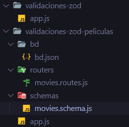
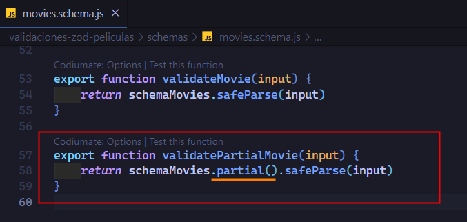
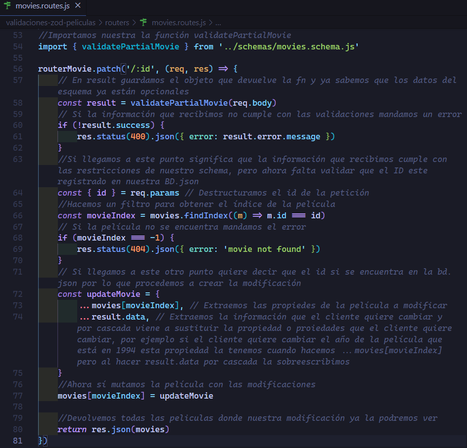
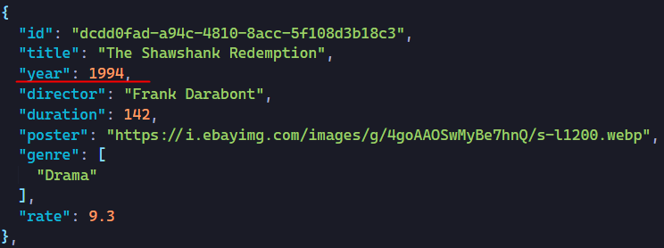
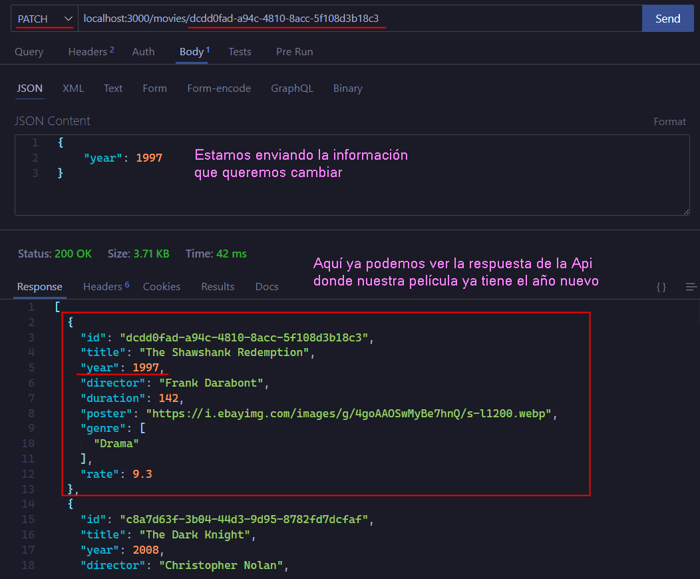
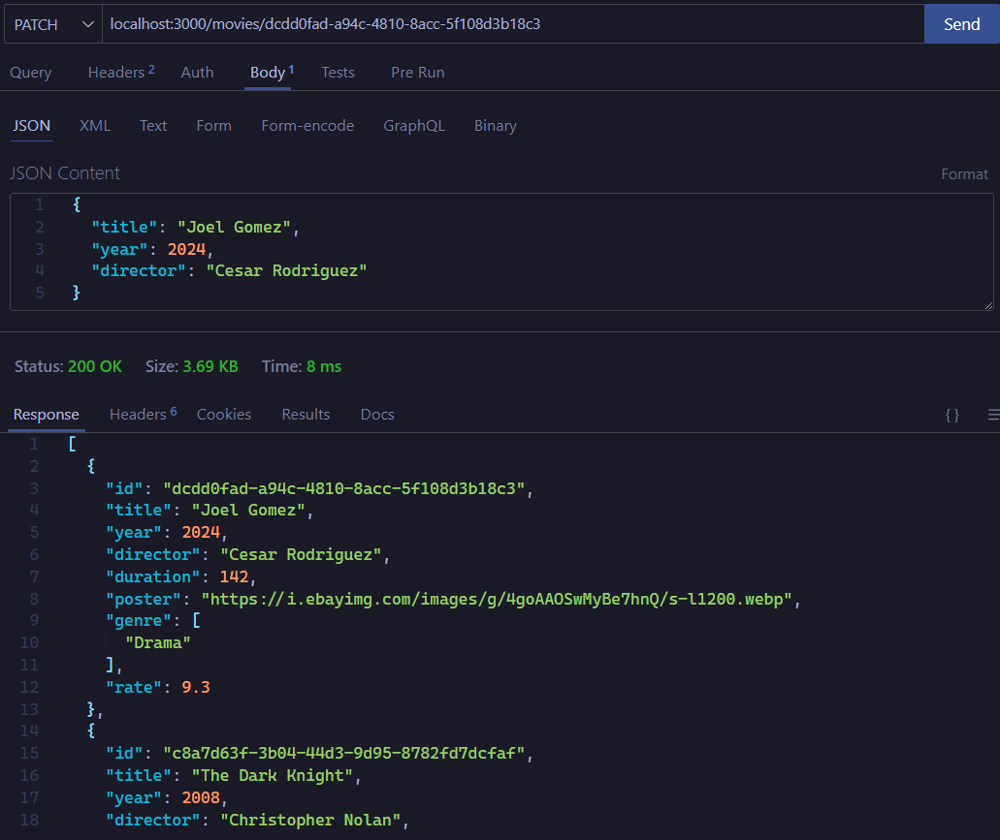
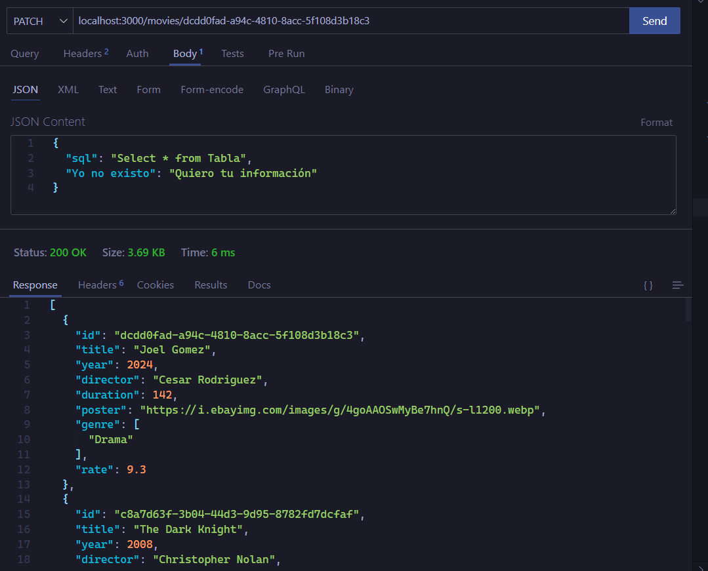
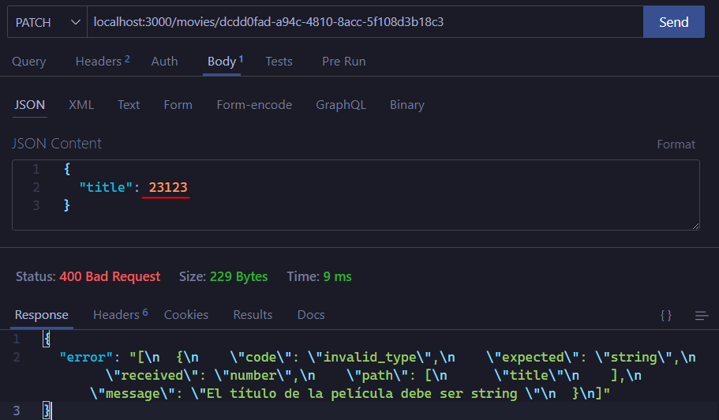
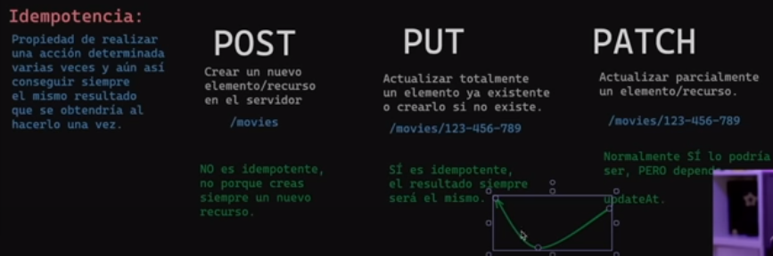

Antes de continuar con las diferencias de los verbos, lo que haremos es hacer una actualización de una película existente y posterior veremos las diferencias de los verbos.
Seguiremos ocupando la misma estructura de la sección anterior.

En el archivo movies.schema.js agregamos la siguiente función.
¿Qué es el método partial() de zod?
El método partial() en un esquema con Zod se utiliza para crear esquemas parciales de un esquema existente. Esto es útil cuando se desea trabajar con partes de un esquema sin necesidad de definir todo el esquema cada vez. Los esquemas parciales permiten reutilizar y combinar partes de esquemas definidos previamente, facilitando la reutilización de la lógica de validación y manteniendo el código más limpio y modular.
El término "parcial" en el contexto de Zod se refiere a la creación de esquemas donde todas las propiedades se vuelven opcionales. Esto se logra utilizando el método .partial() en un esquema de Zod. Este enfoque es particularmente útil cuando se desea trabajar con datos que pueden tener un conjunto de propiedades opcionales o cuando se quiere validar partes de un esquema sin necesidad de especificar todos los campos cada vez.
Este comportamiento es similar al tipo Partial en TypeScript, que crea un tipo donde todas las propiedades son opcionales.
Entonces lo que queremos hacer es actualiizar una pelicula, pero haciendo parcial sus propiedades es decir queremos hacer opcionales todas sus propiedades, aunque aquí varia dependendiendo de la situación, nosotros queremos suponer que todas las propiedades son opcionales.
En el archivo movies.routes.js programamos la funcionalidad para poder actualizar una propiedad de la película o ambas propiedades al mismo tiempo.
Pongamos a prueba nuestro código
Modificaremos el año de está película
Procemos entrar al endpoint con el ID de la película a modificar, el cual es el siguiente dcdd0fad-a94c-4810-8acc-5f108d3b18c3
Estamos modificando el año de la película
Lo interesante es que de la manera en que hemos programado esto, nosotros en realidad podemos enviar información inexistente y como en nuestro esquema no se encuentra siemplemente lo ignorará esto hace a nuestra Api más robusta y mantenible.
Ahora actualizaremos mas propiedades de la pélicula

Si enviamos información que no existe simplemente la ignorará y no hara nada al respecto, esto hace muy robusta nuestra Api

Y si enviamos información incorrecta se sigue validando gracias a que estamos reutilizando el schema que habiamos definido.

Diferencias POST, PUT, PATCH
Antes de ver la diferencias debemos conocer el termino idempotencia.
¿Qué es la idempotencia?
En el contexto de los métodos HTTP, la idempotencia se refiere a la propiedad de una operación que produce el mismo resultado, sin importar cuántas veces se repita. En otras palabras, realizar la misma solicitud varias veces no cambia el resultado final.
Por ejemplo las funciones que son puras son idempotentes, ya que si sumamos 2 + 2 siempre obtendremos el mismo resultado.
La idempotencia habla a también del estado interno, por lo tanto es importante este termino por que va ser diferentes en los diferentes métodos o verbos (post,put,patch).
POST: Se utiliza para enviar datos al servidor para su procesamiento. No es idempotente, ya que enviar la misma solicitud POST varias veces puede provocar la creación de recursos duplicados o cambios en el estado del servidor cada vez que se envía la solicitud.
El endpoint para un método POST a menudo apunta a la colección de recursos en plural. Por ejemplo: POST /api/users
PUT: Este método se utiliza para actualizar o reemplazar completamente un recurso en el servidor con los datos proporcionados en la solicitud. Es idempotente, porque enviar la misma solicitud PUT varias veces producirá el mismo resultado: el recurso se actualizará con los mismos datos.
El método PUT se usa comúnmente para actualizar un recurso existente en el servidor. Para identificar el recurso específico que se va a actualizar, es habitual incluir el identificador único del recurso en el endpoint. Por ejemplo: PUT /api/users/{id}
PATCH: Similar a PUT, PATCH se utiliza para actualizar un recurso en el servidor, pero en lugar de reemplazar completamente el recurso, solo actualiza los campos específicos proporcionados en la solicitud. También es idempotente, ya que enviar la misma solicitud PATCH varias veces producirá el mismo resultado: solo los campos especificados se actualizarán, sin afectar otros campos del recurso.
Al igual que PUT, PATCH se utiliza para actualizar un recurso existente. Sin embargo, PATCH suele utilizarse cuando solo se quieren modificar ciertos campos del recurso, en lugar de reemplazarlo por completo. Por lo tanto, el endpoint sigue siendo similar al de PUT, pero se utiliza para aplicar cambios parciales al recurso. Por ejemplo: PATCH /api/users/{id}
Al igual que con PUT, {id} representa el identificador único del usuario que se desea actualizar, pero en este caso, la solicitud PATCH solo modificará los campos especificados en el cuerpo de la solicitud, en lugar de reemplazar todo el recurso.

En resumen, mientras que el método POST generalmente apunta a la colección de recursos para agregar nuevos elementos, los métodos PUT y PATCH apuntan a recursos individuales identificados por su ID para actualizarlos, con PUT reemplazando el recurso completo y PATCH aplicando cambios parciales.
He escuchado que hay algunas veces pero que es muy poco probable en que el put y patch depende si es idempotente ya que podemos tener algo como updateAT
Sí, eso es correcto. Aunque PUT y PATCH son generalmente considerados idempotentes, puede haber situaciones en las que su comportamiento no sea completamente idempotente, especialmente si el recurso que están actualizando incluye campos que cambian con el tiempo, como una marca de tiempo de "última actualización" (updatedAt), como mencionaste.
Por ejemplo, si un recurso tiene un campo updatedAt que se actualiza automáticamente cada vez que se modifica el recurso, entonces una solicitud PUT o PATCH podría cambiar este campo, lo que significa que cada solicitud modificaría el estado del recurso, incluso si los otros campos permanecen iguales. Esto hace que la solicitud no sea completamente idempotente.
En tales casos, los desarrolladores deben tener en cuenta el comportamiento específico de la aplicación y diseñar sus endpoints y operaciones en consecuencia. Siempre es importante comprender cómo se manejan los cambios en los recursos y cómo afectan la idempotencia de las solicitudes PUT y PATCH en el contexto de una aplicación específica.